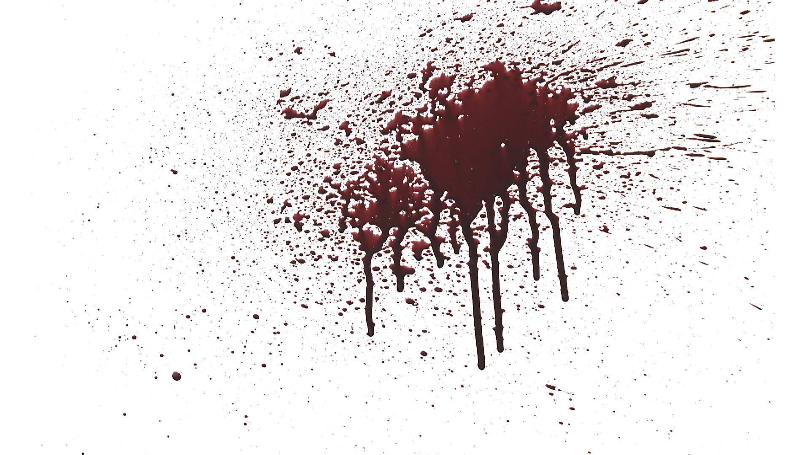
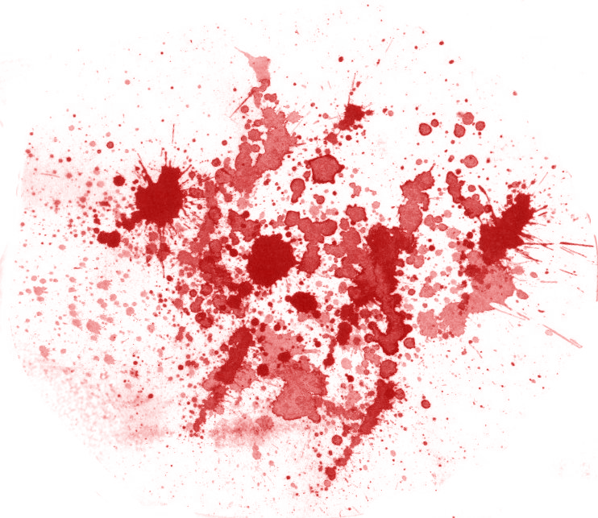

Zombie
Molovich
Duizenden hongerige ondoden lopen zielloos over het stationsplein. Op zoek naar voedsel, naar half vergane hondenlijken, naar vers mensenvlees. Het is gekkenwerk dat ik hier ben, maar de brandstof van de bus is op. Ik hoopte dwars door de menigte wandelende lijken heen te kunnen rauzen. Maar het mocht niet zo zijn. Ergens ter hoogte van het gebouw dat ooit Oibibio huisvestte, hield de bus op met rijden. Ik heb ‘m uit laten rollen en nu loop ik hier. Onder mijn gele regenpak heb ik mezelf in aluminiumfolie verpakt in de hoop niet besmet te worden door de verontreinigde miezerregen.

Donkere wolken hangen als een woedende God boven het troosteloze Centraal Station. Een venijnige wind rammelt aan de kapotte ramen. De kinderwagen die ik voortduw zit vol met jachtgeweren, ijzeren staven, keukenmessen, een shotgun en een kettingzaag. Maar als ik dat hier moet gebruiken… als ze merken dat ik nog niet dood ben… dan ben ik verloren, dat weet ik maar al te goed. Waarom doe ik dit eigenlijk? Om Stijloefeningen van Raymond Queneau te kunnen bemachtigen. Tja. Als ik mij iets in m’n hoofd haal, dan rust ik niet voordat ik het voor elkaar heb. Zo ben ik. Daar kan geen bloeddorstige ondode ook maar iets aan veranderen. Gelukkig zijn ze te veel met zichzelf bezig om me op te merken. Ik heb het gehaald en loop nu over een plank. Links en rechts modderige bouwputten die er verlaten bij liggen. Beneden vechten drie schurftige honden om een groen uitgeslagen mensenbeen.
Voor de bibliotheek. Een aantal letters die ooit, in betere tijden, samen met een een aantal andere letters boven de ingang de woorden Openbare Bibliotheek vormden, liggen op de grond. De ruiten van de bibliotheek zijn stuk voor stuk gesneuveld. Ik kijk naar boven. Het gebouw hangt dreigend over me heen, als een enorme grafsteen die mij elk moment kan verpletteren. Ik pak voor de zekerheid m’n shotgun uit de kinderwagen en laad ‘m door. Net als ik naar binnen wil gaan, voel ik dat er iemand aan mijn rechterbeen hangt. Als in een reflex geef ik een trap naar achteren, draai me om en schiet een kogel dwars door het hoofd van een vrouwelijke zombie. De kogel mist z’n uitwerking niet: haar halve hoofd is weg. Haar gitzwarte krullen bungelen op haar rechterschouder. Waar ooit haar rechteroog had gezeten zit nu een groot gapend gat waaraan een oor bungelt. POST OFFICE, schreeuwt ze. Ik hoor dat ze een Frans accent heeft. Ooit heeft hier inderdaad een postkantoor gestaan. Lang voordat Amsterdam besmet raakte met het virus. Terwijl ik mijn shotgun herlaad, draait de ondode vrouw zich om en waggelt ze met haar armen vooruit richting een achteruit rijdende Renault 21 waarin een lachend skelet achter het stuur zit. Lappen vlees hangen aan zijn schedel. Ik schiet de vrouw in haar rug. Flarden bedorven zombievlees vliegen in de rondte, maar de vrouw blijft half vallend doorlopen.
Boven op de tweede verdieping. Het is een chaos hier. Alle ramen zijn eruit. Er liggen meer TL-buizen kapot op de grond dan dat ze aan het plafond hangen. Overal liggen boeken. Bij de Q zijn zowaar een aantal boeken van Queneau te vinden, maar uiteraard zit Stijloefeningen daar niet bij. Dat zul je altijd zien. Ik loop naar de bureaus waar eens de computers stonden. Er staan er nog wel een paar. Maar alles is eruit gehaald. Volledig ontmanteld. Aan diggels geslagen beeldschermen. Maar terwijl ik hier sta, zie ik dat er iemand achter een bureau zit. Ik laad mijn shotgun weer en sluip op de persoon af, die diep geconcentreerd boeken aan het sorteren is. Een vrij gave, van enige blos voorziene huid doet mij vermoeden dat ik hier met een levend wezen te maken heb. Als ik hem vraag wie hij is, schrikt hij zich helemaal het apenzuur. Maar hij hervat zich vrij snel door een AK47 te pakken en in het wilde weg te gaan schieten. Gelukkig is de man zo bijziend als een Kentucky Fried Chicken, zodat ik tijd heb om me te verschuilen achter een stuk of tien zo te zien amper gelezen exemplaren van De Ontdekking van de Hemel. ‘Ola supermercato‘, schreeuw ik, ‘ik wilde alleen maar weten of jullie Stijloefeningen van Raymond Queneau hebben.’ ‘Zeg dat dan’, schreeuwt de medewerker. ‘Ik ben op zoek naar Stijloefeningen van Raymond Queneau.’ ‘Bij de Q’, schreeuwt de medewerker. ‘Daar lag ie niet.’ ‘Misschien heeft het magazijn nog een exemplaar’, zegt de medewerker. ‘Hoe weet ik dat?’ ‘Moet je even een mailtje sturen.’ ‘Zijn er nog computers die het doen dan?’ ‘Nee.’ ‘Hoe moet ik dan een mailtje sturen?’ ‘Goed punt. Laat mij daar even over nadenken.’ Zegt de medewerker.

Vijftien minuten later deelt de medewerker mij mede dat er lang over heeft nagedacht, maar dat hij geen idee heeft hoe je het magazijn zonder mail moet bereiken. Enigszins teleurgesteld begin ik aan de barre tocht terug. Op het Bos en Lommerplein, vlak bij mijn schuilplaats onder de restanten van de ringweg, vind ik in een verlaten babywinkel een paar prachtige babyschoentjes voor mijn zoon.